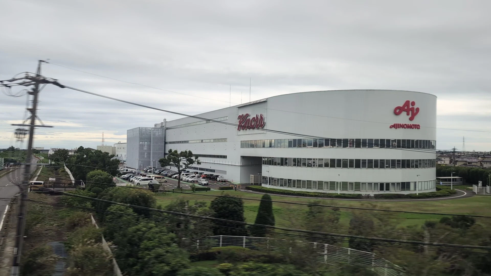
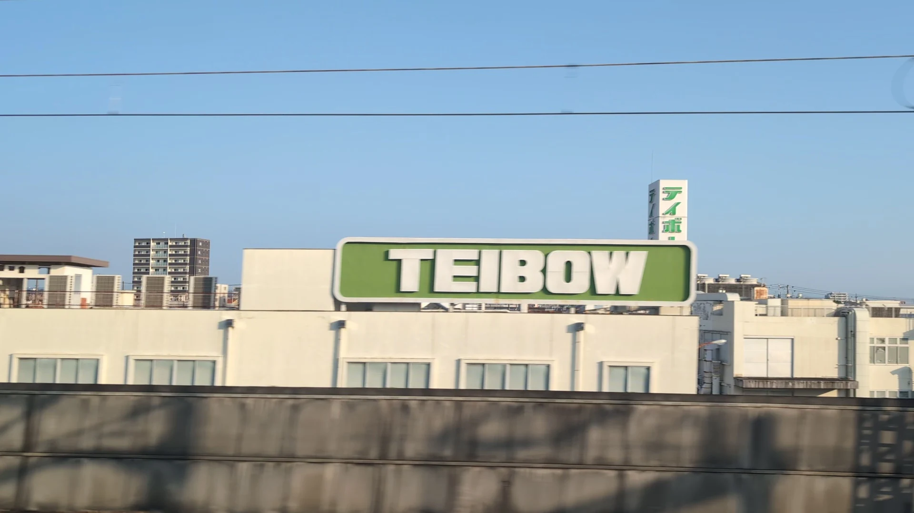
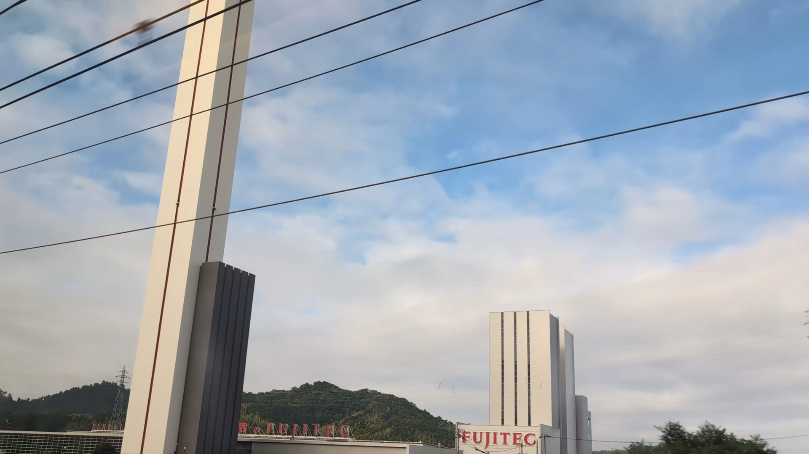

구간별로 보기
도카이도 신칸센을 타고 커피, 음료, 화장품과 생활용품의 생산지를 찾아보세요. 차창 사진으로 만나는 공장과 눈여겨볼 풍경, 좌석 방향을 안내합니다.
신요코하마 → 오다와라
오다와라 가모노미야

E석 쪽진행 방향 오른쪽 메이지 세이카 파마테크
지붕 위의 붉은 간판
사카와강 바로 동쪽, 크림색 건물 지붕에 붉은 회사명이 보입니다. 오다와라시 가모노미야에 있는 이 공장에서는 정제와 주사제 등을 생산합니다.
미시마 → 신후지
후지산 기슭

E석 쪽진행 방향 오른쪽 UCC 후지 공장
커피 탑 너머로 후지산
흰색 탑의 ‘UCC COFFEE FUJI’를 찾아보세요. 로스팅 커피를 만드는 공장 뒤로 후지산이 겹쳐 보입니다.

E석 쪽진행 방향 오른쪽 일본제지 후지 공장·후지 지구
후지산 아래서 만드는 생활용지
빨강·하양 굴뚝과 후지산이 눈에 띕니다. 부지 안의 크레시아 가스가 신후지 공장에서는 두루마리 화장지 등 가정용 종이를 만듭니다.

E석 쪽진행 방향 오른쪽 고아공업(KOA) 본사 공장
밤에 만나는 무지개 굴뚝
골판지 원지 등을 만드는 공장입니다. 사진 속 ‘虹煙’은 2026년 11월 11~23일에만 진행하는 조명 연출로, 늘 볼 수 있는 풍경은 아닙니다.
시즈오카 → 가케가와
야이즈・오이강

A석 쪽진행 방향 왼쪽 삿포로맥주 시즈오카 공장
시즈오카의 한 잔, 야이즈에서
줄지어 선 은색 탱크와 별 모양 표지를 찾아보세요. 시즈오카 한정 맥주 ‘静岡麦酒’도 야이즈의 이 공장에서 만듭니다.

E석 쪽진행 방향 오른쪽 KIBUN 시즈오카 공장
어묵 포장에 적힌 ‘＋S’
이어진 빨간 지붕 위로 ‘紀文’ 표지가 보입니다. 가마보코와 지쿠와 같은 어묵을 만드는 곳으로, 포장의 제조소 코드 ‘＋S’가 바로 이 공장을 가리킵니다.
오이강 철교 근처입니다. 반대편 창으로는 아지노모토 건물이 보입니다.

E석 쪽진행 방향 오른쪽 네슬레재팬 시마다 공장
강 건너 보이는 커피 이름
넓은 강변이 펼쳐지면 산기슭을 바라보세요. 시마다 공장은 커피를 만들고, 추출 후 남은 커피 찌꺼기를 보일러 연료로도 씁니다.
오이강 철교에서 상류 쪽을 보세요. 공장은 선로에서 약 1.3km 떨어져 있습니다.

A석 쪽진행 방향 왼쪽 아지노모토식품·아지노모토베이커리
죽과 굽기 전의 빵
둥글게 돌출된 흰 벽에 ‘Knorr’가 보입니다. 같은 주소에 죽을 만드는 아지노모토식품 시즈오카 공장과 냉동 빵 반죽을 만드는 아지노모토베이커리 시마다 사업소가 있습니다.
오이강 철교 부근입니다. KIBUN의 빨간 표지 탑과는 선로를 사이에 두고 반대쪽에 있습니다.
참고 자료
사진으로 식별할 수 있는 것은 부지의 외관입니다. 각각의 생산 라인이 어느 건물에 있는지는 확인하지 못했습니다.
가케가와 → 하마마쓰
가케가와・후쿠로이・하마마쓰

A석 쪽진행 방향 왼쪽 시세이도 가케가와 공장
커다란 흰 지붕 아래 화장품
선로를 따라 뻗은 커다란 흰 지붕이 눈에 띕니다. 메이크업 제품을 만드는 공장으로, 지붕은 출하 중인 제품을 비바람과 햇빛으로부터 보호합니다.

A석 쪽진행 방향 왼쪽 마루다이식품 시즈오카 공장
포장의 ‘＋P’는 가케가와
가로수 위로 빨간 마루다이식품 표지가, 그 아래로 둥근 창들이 보입니다. 회사는 2023년 이곳에서 만든 롱 비엔나소시지를 소개했습니다. 포장의 제조소 코드는 ‘＋P’입니다.
가케가와역에서 하마마쓰 방면으로 약 4km. 하행에서는 시세이도를 지난 뒤입니다.

A석 쪽진행 방향 왼쪽 POLA 화성공업 후쿠로이 공장
유리에 비친 내가 탄 열차
화장품 공장의 긴 유리벽을 눈여겨보세요. 빛이 잘 맞으면 지금 타고 있는 신칸센이 유리에 비칩니다.

A석 쪽진행 방향 왼쪽 오츠카제약 후쿠로이 공장
파란 벽이 알려주는 포카리 공장
푸른 잔디 너머로 커다란 파란색 ‘POCARI SWEAT’ 벽이 보입니다. 포카리스웨트 등 음료를 만드는 공장임을 한눈에 알 수 있습니다.

E석 쪽진행 방향 오른쪽 닛토공업 가케가와 공장
전기 설비를 지키는 상자
흰 벽의 ‘NITO 日東工業’ 표지를 찾아보세요. 이곳에서 만드는 소형 캐비닛은 전기 설비를 넣어 보호하는 함체입니다.

E석 쪽진행 방향 오른쪽 유니참 프로덕츠 시즈오카 공장
정원에도 익숙한 로고가
흰 벽을 따라 흐르는 노랑·주황 물결을 눈으로 좇으면 정원에도 커다란 로고가 나타납니다. 이곳에서는 아기와 성인용 기저귀, 여성 위생용품, 청소용 시트 등을 만듭니다.
가케가와역에서 하마마쓰 방면으로 약 4km. 하행에서는 닛토공업을 지난 뒤입니다.

E석 쪽진행 방향 오른쪽 하우스식품 시즈오카 공장
카레도 간식도 이곳에서
‘ハウス食品’ 간판 탑을 찾아보세요. 후쿠로이의 이 공장은 바몬드 카레, 홋카이도 스튜, 옥수수 스낵 ‘통가리콘’을 만듭니다.

E석 쪽진행 방향 오른쪽 야마하발동기 후쿠로이 남공장
선로 옆에서 세계의 바다로
빨간 YAMAHA 글자와 흰 세로 격자가 눈에 띕니다. 이곳에서 만드는 것은 배 뒤에 다는 엔진, 바로 선외기입니다.

E석 쪽진행 방향 오른쪽 TEIBOW 본사 공장
모자 만들던 기술이 펜촉으로
초록색 ‘TEIBOW’가 표지입니다. 모자용 펠트 가공 기술에서 출발해 펜촉 제조로 나아간 회사의 본사와 공장입니다.
하마마쓰 → 도요하시
다카쓰카・하마나호・도요하시

A석 쪽진행 방향 왼쪽 스즈키 본사(다카쓰카)
집 지붕 너머 빨간 S
주택 지붕 너머로 자동차에서 보던 빨간 S가 나타납니다. 이곳은 스즈키 본사입니다. 다카쓰카에서 만들던 오토바이 엔진의 생산은 2018년 하마마쓰시 미야코다로 옮겨갔습니다.
하마마쓰역과 하마나호 사이, JR 다카쓰카역 근처입니다. 하행은 하마나호를 건너기 전, 상행은 건넌 뒤입니다.

A석 쪽진행 방향 왼쪽 신포니아 테크놀로지 도요하시 제작소
반도체 웨이퍼를 조심조심
잔디 너머 긴 벽에 ‘豊橋製作所’, ‘創業1917年’이 보입니다. 스마트폰 등에 쓰이는 반도체를 만드는 과정에서 얇은 실리콘 웨이퍼를 청결하게 옮기는 장비의 주력 공장입니다.
도요하시시 미쓰야초, 후타가와역에서 도쿄 쪽입니다. 하행은 도요하시 도착 전, 상행은 도요하시 출발 후입니다.
참고 자료
같은 회사 이름은 나고야역 남쪽 약 800m에서도 보입니다. 그곳은 상업시설 ‘마켓 스퀘어 사사시마’ 외벽에 걸린 약 70m 길이의 광고입니다.
같은 회사 이름, 이번에는 광고

미카와안조 → 나고야
안조

E석 쪽진행 방향 오른쪽 야마자키제빵 안조 공장
아침 빵은 선로 옆에서
태양 로고와 빨간 ‘ヤマザキ’가 가까이 보입니다. 미카와안조 근처의 이 공장에서는 빵과 일본식·서양식 과자를 만듭니다.

E석 쪽진행 방향 오른쪽 니치반 안조 공장
익숙한 간판, 달라지는 역할
빨강·하양·파랑의 ‘セロテープ’ 간판이 눈에 띕니다. 점착테이프 공장은 의료를 뒷받침하는 제품으로도 역할을 넓히고 있습니다.
참고 자료
2026년 설비 자료에는 의료 보조용 및 종이·플라스틱 점착테이프류가 기재되어 있습니다. 2025년 공식 설명에 따르면 셀로테이프 관련 생산은 사이타마로 집약됐습니다. 따라서 간판만으로 안조에서 현재 생산하는 제품이라고 판단하지 않습니다.
나고야 → 기후하시마
기요스

E석 쪽진행 방향 오른쪽 기린맥주 나고야 공장
탱크가 커다란 맥주잔처럼
은색과 금색으로 나뉜 탱크가 줄지어 있습니다. 나고야 서쪽 기요스에서 이치방시보리를 만드는 공장을 찾아보세요.
마이바라 → 교토
마이바라・히코네・오미

A석 쪽진행 방향 왼쪽 얀마 중앙연구소
마이바라를 떠나면 큰 시계가
가로로 긴 건물에 빨간 ‘YANMAR’와 큰 시계가 보입니다. 마이바라의 이 시설은 중앙연구소로, 엔진의 연비를 높이는 기술과 대체에너지 등을 연구합니다.
하행은 마이바라 출발 직후입니다. 고다마에서 약 1분 뒤 보았다는 관찰 기록이 있습니다. 상행은 마이바라 도착 전입니다.

E석 쪽진행 방향 오른쪽 후지테크 빅윙
매일의 오르내림을 만드는 곳
높이 솟은 탑은 엘리베이터 연구탑입니다. 같은 부지에 표준형과 주문형 엘리베이터를 만드는 공장도 있어 연구와 생산을 함께 맡습니다.

A석 쪽진행 방향 왼쪽 조이슨 에치가와 제조소
유리 출입구 위의 JOYSON
에치강 옆을 지날 때 유리 출입구 위로 ‘JOYSON’이라는 글자가 보입니다. 자동차 부품과 어린이용 카시트를 개발하고 만드는 곳입니다.

A석 쪽진행 방향 왼쪽 롯데 시가 공장
커다란 과자 간판이 나란히
과자와 아이스크림의 커다란 간판이 나란히 걸려 있습니다. 유키미 다이후쿠, 쿨리시, 토포 등을 만드는 공장이지만, 간판에 나온 모든 제품을 여기서 생산하는 것은 아닙니다.

A석 쪽진행 방향 왼쪽 퀄리텍파마 시가 공장
선로를 따라 이어지는 파란 글씨
야스강 근처에서 옅은 색 외벽에 파란색 가타카나로 쓴 회사 이름을 볼 수 있습니다. 야스시 미카미에 있는 이 공장은 다른 회사의 의약품을 위탁 생산합니다.

A석 쪽진행 방향 왼쪽 닛신식품 시가 공장
컵라이스도 이곳에서
릿토에서 ‘日清食品’ 건물을 찾아보세요. 카레메시 같은 컵라이스도 생산합니다. 반대편 E석 쪽에 있는 간사이 공장과는 별개의 공장입니다.
교토 → 신오사카
야마자키

E석 쪽진행 방향 오른쪽 산토리 야마자키 증류소
산기슭에 자리한 위스키의 고향
주택 지붕과 전선 너머로 ‘山崎’ 글자가 보입니다. 싱글몰트 야마자키에 쓰이는 몰트 원액을 이 증류소에서 만듭니다.
먼저 좌석 방향을 확인하세요
일반실에서 신오사카 방면 하행은 A석이 진행 방향 왼쪽, E석이 오른쪽입니다. 도쿄 방면 상행은 반대입니다. 그린샤(Green Car)의 D석은 일반실 E석과 같은 쪽입니다.
이 안내를 읽기 전에
공장별 용도와 생산 품목은 2026년 11월에 확인한 개별 자료를 바탕으로 정리했습니다. 과거 자료의 연도와 날짜는 따로 표시했습니다. 같은 역 사이의 목록은 실제 통과 순서와 다를 수 있으며, 거리는 모두 대략적인 값입니다.
사진: michikusa. POLA 사진 속 열차 디자인: © Disney.